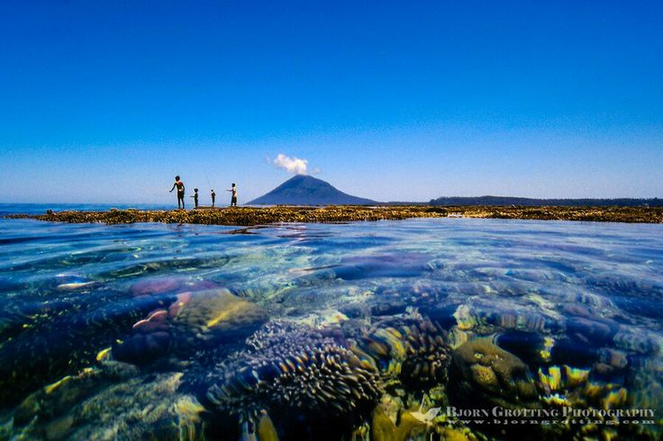
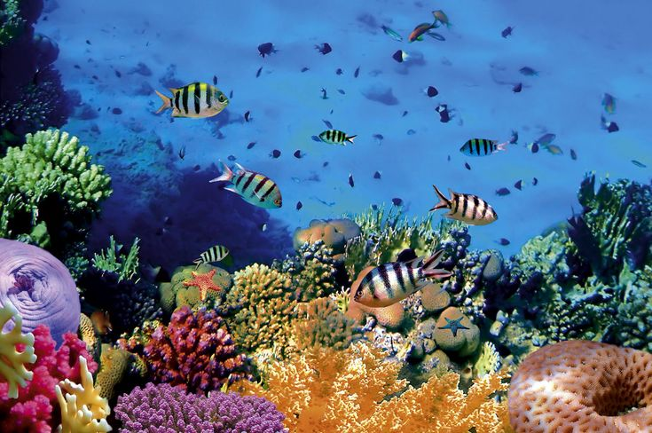

Tentang Bunaken
Bunaken merupakan tempat wisata yang berada di Manado, Sulawesi Utara. Bunaken cukup dikenal karena pemandangan laut dan kehidupan bawah lautnya.
Di Bunaken, pengunjung bisa melihat terumbu karang, ikan, dan berbagai biota laut lainnya. Karena itu, snorkeling dan diving menjadi aktivitas yang banyak dilakukan oleh wisatawan.
Hal yang menarik
- Terumbu karang
- Air laut yang jernih
- Berbagai jenis ikan
- Pemandangan laut
Galeri


Aktivitas
Beberapa kegiatan yang bisa dilakukan saat berkunjung ke Bunaken antara lain:
- Snorkeling
- Diving
- Naik perahu
- Menikmati pemandangan
- Berfoto
Tips
- Membawa perlengkapan pribadi.
- Menjaga kebersihan lingkungan.
- Tidak menyentuh atau merusak terumbu karang.
- Mengikuti arahan pemandu.
Lokasi
Bunaken berada di wilayah Kota Manado, Sulawesi Utara. Dari Manado, perjalanan ke Bunaken dilanjutkan dengan menggunakan transportasi laut.
Informasi Wisata
| Informasi | Keterangan |
|---|---|
| Nama | Bunaken |
| Lokasi | Manado, Sulawesi Utara |
| Jenis wisata | Wisata bahari |
| Aktivitas | Snorkeling dan diving |
| Jaga kebersihan selama berwisata. | |
Video
Video tentang wisata Bunaken: